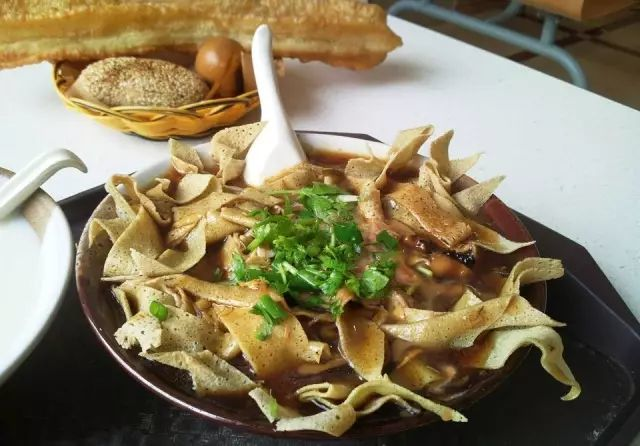
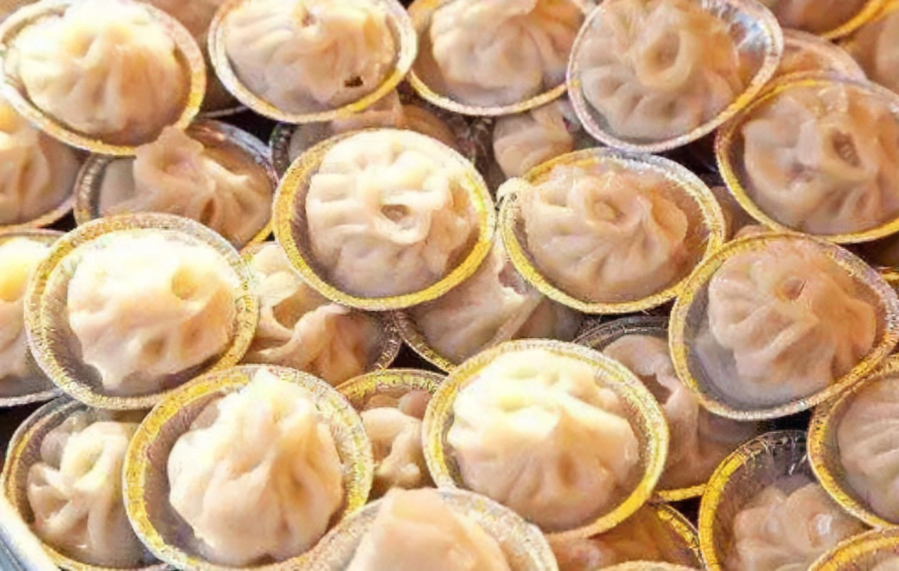
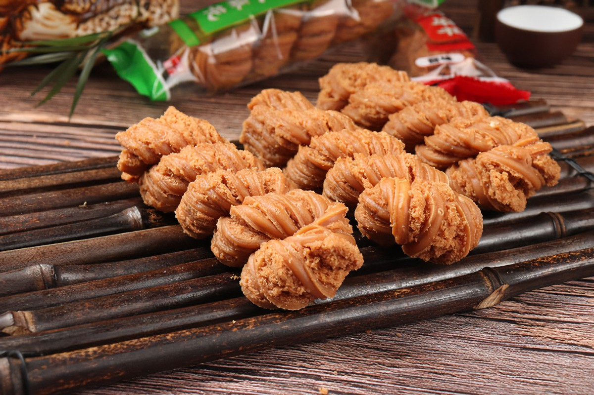
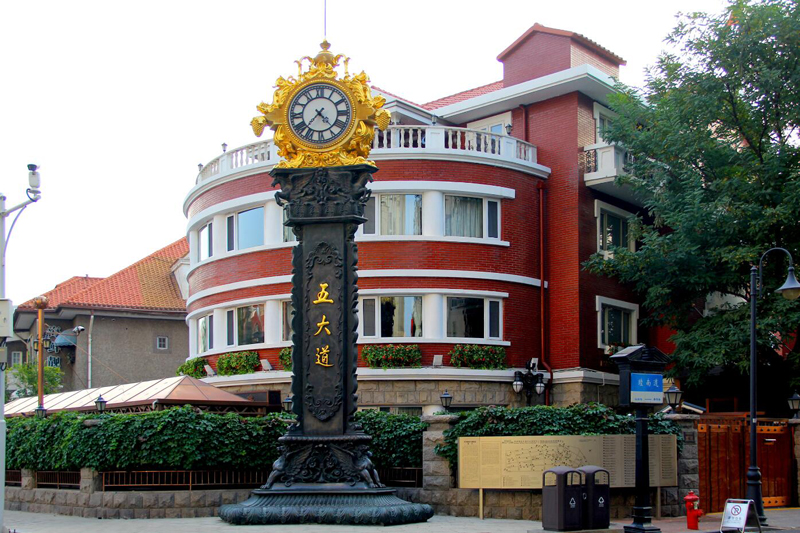
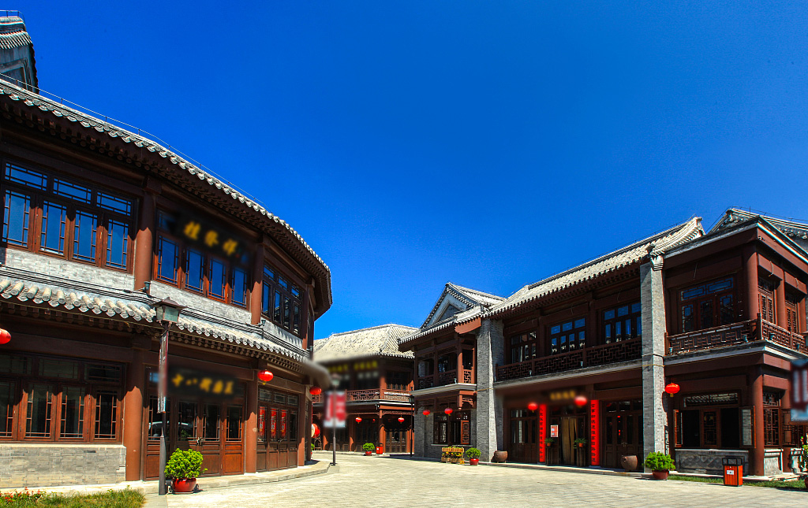

天津 / Tianjin
城市简介
天津，简称“津”，别称津沽、津门，是中华人民共和国省级行政区、直辖市、国家中心城市、超大城市，国务院批复确定的中国北方对外开放的门户，中国北方的航运中心、物流中心和现代制造业基地 。 截至2021年末，全市下辖16个区，总面积11966.45平方千米，常住人口1373万人。2021年，全市实现地区生产总值为15695.05亿元。
天津是自古因漕运而兴起，唐朝中叶以后成为南方粮、绸北运的水陆码头；金朝在直沽设“直沽寨”；元朝设“海津镇”，是军事重镇和漕粮转运中心；明永乐二年（1404年）正式筑城，是中国古代唯一有确切建城时间记录的城市。
天津是中国北方最大的港口城市、国际性综合交通枢纽 、国际消费中心城市、国家物流枢纽、全国先进制造研发基地、北方国际航运核心区、金融创新运营示范区 、改革开放先行区、首批沿海开放城市、亚太区域海洋仪器检测评价中心。
美食之都
天津悠久的历史，催生了各式各样的美食。
在清晨，天津的各个早点商埠的香气就已经传遍四方。如果你是一个形色匆匆的上班族，你一定不会拒绝煎饼果子（右图）。它制作方便、携带容易，将煎饼的软与果子的脆有机融合了起来——这是每一个天津人都无法抵抗的诱惑。
如果你并不急于工作，你也可以在一家路边的小店品尝各式各样的天津早点。油条饱满、酥脆，现磨的豆浆往往是其最好的伴侣。一碗锅巴菜加上一碗老豆腐，鲜香可口，佐之以天津特色的茶叶蛋，足以开启天津人元气满满的一天。
一天中的其他时光，天津人也是不容错过的。除了可以品尝麻花、炸糕等等特色美食，你也可以点上一屉美味的狗不理包子，作为午餐、晚餐最好的美食。生活在老城区的人也喜欢在晚上喝上一碗浓郁美味的羊杂汤，吃上一碗劲道爽滑的牛肉板面，为一个天的劳累画上一个圆满的句号。



风景名城
天津是中国近代史的见证者，也是风格迥异的名胜“收集者”。
天津五大道，是天津最具风格的地域。近代时，这里是各国列强的租借，因此形成了不同文化风格的楼宇、街道。乘坐一辆特色的马车，你将流连于这里的每一丝气息，并徜徉于文化交融的海洋。
走在这里，形形色色的博物馆和民居总在诉说着一段精彩的历史故事。这里也不乏小学、中学镶嵌于美景之中，在这里读书，可以在疲累的时候眺望窗外，接受美景的洗礼。
但或许，我们更应该记住，那一段血与泪的历史……


古文化街是天津文化的历史名片。在这里，你可以看到一条由文化流出的历史之河。
天津不仅以美食闻名天下，其独具特色的历史文化也尤为突出。杨柳青年画、风筝魏、泥人张……那些脍炙人口的民俗玩意都可以在这条长街中找到。
你也可以在这条长街中，找到那些总是大排长龙的糖画摊位。人们总是不远万里来到这里，买上一个糖画艺人的作品，并时常惊叹于艺人们的精湛技艺。
古文化街已经坐落在陞安大街上几百年了，百年以来，周围的景象不断变化，各式综合性娱乐场所如今拔地而起，而古文化街就像一个迟暮的老人，安静而庄严地矗立在那里。
只愿，人们能永远记住它……